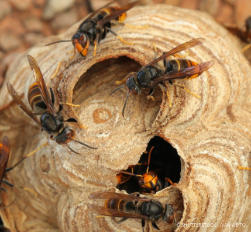
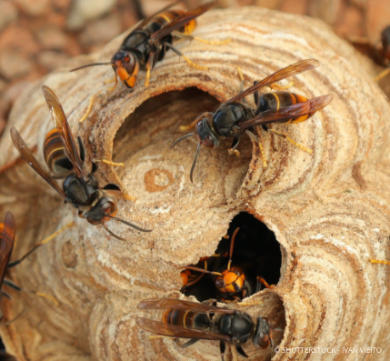
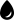
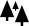
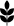
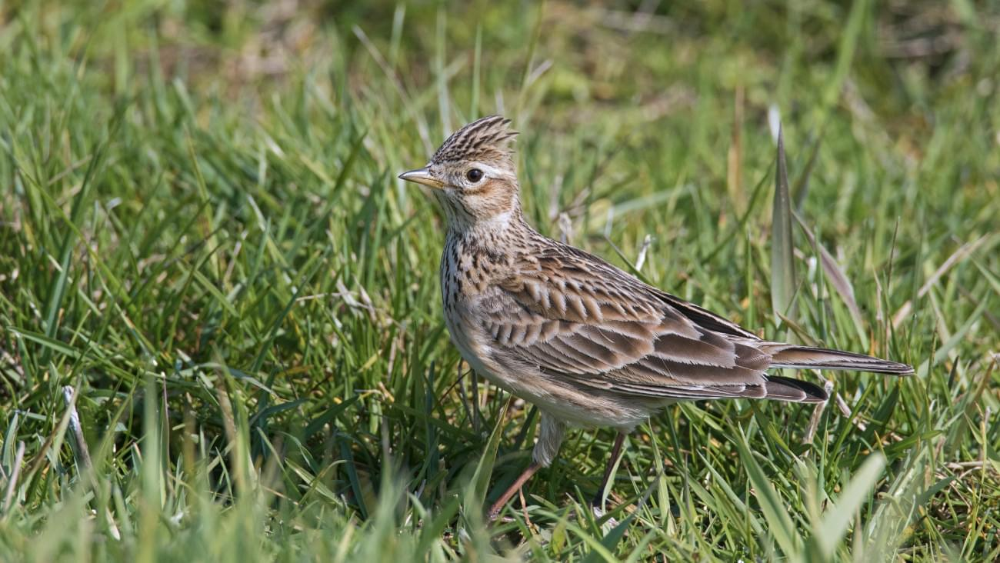

Connaître notre biodiversité pour mieux la préserver !
Natuur in België: ontdek het« Living Planet Report »

 

ACHTER DE SCHERMEN VAN HET LIVING PLANET REPORT
Waarom ?
De staat van de biodiversiteit en onze gezondheid zijn onlosmakelijk met elkaar verbonden. De COVID-19-pandemie heeft ons daar heel duidelijk aan herinnerd.
Het nieuwe 'Living Planet Report – Natuur in België' is een uniek referentiewerk waarop beleidsmakers zich kunnen baseren om hun ambities bij te stellen en samen met alle actoren uit de samenleving de natuur beter te leren kennen en te beschermen.
Zorgen voor de natuur is namelijk zorgen voor onszelf. Het wordt dringend tijd dat we dat beseffen. En waar kunnen we beter beginnen dan in eigen land? WWF-België laat je exclusief kennismaken met dit unieke rapport.
Hoe ?
Het 'Living Planet Report – Natuur in België' is het resultaat van bijna twee jaar intense samenwerking tussen belangrijke actoren uit de wetenschappelijke wereld en natuurbehoudsorganisaties.
Vijf vooraanstaande organisaties – het Belgisch Biodiversiteitsplatform, het Koninklijk Belgisch Instituut voor Natuurwetenschappen, Natagora, Natuurpunt en WWF – hebben de handen in elkaar geslagen om samen met een groot aantal wetenschappers de relevantie van dit unieke rapport te garanderen.
We willen iedereen die heeft meegewerkt aan dit uitzonderlijke project dan ook van harte bedanken. Lees alles over de gebruikte methodiekLPI België

- 
- 
- 


Naast het hoognodige inzicht in de huidige staat en trends van de biodiversiteit in België, bood het 'Living Planet Report – Natuur in België' ook een grote impuls voor een nauwere samenwerking en dialoog tussen de verschillende organisaties en belanghebbenden in het hele land.
Hilde Eggermont, Belgisch BiodiversiteitsplatformDit ‘Living Planet Report’ toont op wetenschappelijke en neutrale basis hoe dringend het is om doortastend in te grijpen als we de achteruitgang van de biodiversiteit echt willen ombuigen.
Hendrik Segers, Koninklijk Belgisch Instituut voor NatuurwetenschappenHet 'Living Planet Report – Natuur in België' toont mooi aan hoe de gegevens die wetenschappers en natuurliefhebbers op het terrein verzamelen, kunnen gebundeld worden om beter te begrijpen hoe de natuur in ons land evolueert.
Jean-Yves Paquet, NatagoraHet was een ongelooflijke uitdaging om alle beschikbare (en minder vlot beschikbare) gegevens over de biodiversiteit samen te voegen en er de belangrijkste trends uit te distilleren voor het ‘Living Planet Report’.
Marc Herremans, NatuurpuntHet 'Living Planet Report – Natuur in België' is een prachtig voorbeeld van samenwerking om de biodiversiteit in België naar een hoger niveau te tillen. Het rapport is een eerste stap om dat doel ook daadwerkelijk te verwezenlijken.
Olga Szczodry, WWF-België


Naast het hoognodige inzicht in de huidige staat en trends van de biodiversiteit in België, bood het 'Living Planet Report – Natuur in België' ook een grote impuls voor een nauwere samenwerking en dialoog tussen de verschillende organisaties en belanghebbenden in het hele land.
Hilde Eggermont, Belgisch BiodiversiteitsplatformDit ‘Living Planet Report’ toont op wetenschappelijke en neutrale basis hoe dringend het is om doortastend in te grijpen als we de achteruitgang van de biodiversiteit echt willen ombuigen.
Hendrik Segers, Koninklijk Belgisch Instituut voor NatuurwetenschappenHet 'Living Planet Report – Natuur in België' toont mooi aan hoe de gegevens die wetenschappers en natuurliefhebbers op het terrein verzamelen, kunnen gebundeld worden om beter te begrijpen hoe de natuur in ons land evolueert.
Jean-Yves Paquet, NatagoraHet was een ongelooflijke uitdaging om alle beschikbare (en minder vlot beschikbare) gegevens over de biodiversiteit samen te voegen en er de belangrijkste trends uit te distilleren voor het ‘Living Planet Report’.
Marc Herremans, NatuurpuntHet 'Living Planet Report – Natuur in België' is een prachtig voorbeeld van samenwerking om de biodiversiteit in België naar een hoger niveau te tillen. Het rapport is een eerste stap om dat doel ook daadwerkelijk te verwezenlijken.
Olga Szczodry, WWF-België

Biodiversiteit ?
Het belang van biodiversiteit
Al onze economische activiteiten en zelfs de hele samenleving hangen af van absoluut vitale 'ecosysteemdiensten': vruchtbaarheid van de bodem, een gezonde leefomgeving met zuivere lucht en drinkbaar water, voedsel, grondstoffen enz.
Hoe rijker de biodiversiteit, hoe meer deze essentiële diensten ten goede komen aan de mens.
Bovenop die positieve impact heeft de natuur echter ook een intrinsieke waarde die losstaat van haar waarde voor de mens. Volgens deze visie maakt de mens integraal deel uit van de natuur. Zoals steeds meer wetenschappelijke studies aantonen, heeft een groene leefomgeving een positief effect op onze fysieke en mentale gezondheid.
Wat is biodiversiteit precies ?
Biodiversiteit is een samenvoeging van de woorden ‘biologisch’ en ‘diversiteit’. De term verwijst naar de grote verscheidenheid van leven op aarde.Hieronder verstaan we zowel de verschillende planten, dieren, schimmels en micro-organismen, als de populaties die ze vormen en de natuurlijke habitats waarin ze leven. We onderscheiden drie niveaus van biodiversiteit:
- genetische diversiteit of de verscheidenheid aan individuen binnen één soort.
- soortendiversiteit of de rijkdom aan verschillende soorten planten, dieren en micro-organismen.
- ecosysteemdiversiteit, die de verschillende interacties tussen de populaties onderling én hun fysieke leefomgeving weerspiegelt.
Er is een continue wisselwerking en evolutie van de soorten en leefgebieden op elk van deze niveaus. Dankzij een grote genetische diversiteit kunnen soorten zich vlotter aanpassen aan veranderingen in hun omgeving. In België hebben soorten die zich kunnen aanpassen aan drogere omstandigheden, meer kans om de klimaatverandering te overleven
FOCUS OP
DE BELGISCHE FAUNA
De Slechtvalk
Allez plus loin et découvrez toute la richesse de la faune belge !
Téléchargez notre rapport et l’ensemble de nos études de la vie sauvage.De Slechtvalk
Falco peregrinusDe slechtvalk is een luchtacrobaat. Met zijn aerodynamische bouw en grote behendigheid zoeft hij door de lucht met snelheden van 200 km/uur en meer. Dieverbluffende eigenschap maakt van hem de snelste vogel ter wereld.
In het begin van de 20ste eeuw werd er intens gejaagd op de slechtvalk. Tijdens de Tweede Wereldoorlog bijvoorbeeld werden de roofvogels afgeschoten om de postduiven te beschermen. Ook het massale gebruik van insecticiden zoals DDT (in de periode 1950-1970) leidde tot een sterke achteruitgang van de populatie.
Toen in 1973 de laatste broedende slechtvalk in België verdween, was dat voor natuurliefhebbers het signaal om in actie te komen. De vogelsoort werd wettelijk beschermd in Europa, voor de meest schadelijke insecticiden gold er voortaan een verbod, verschillende kweek- en herintroductieprogramma’s zagen het licht en op tal van plaatsen kwamen er nestkasten. Al die inspanningen wierpen vrucht af. Sinds de jaren 1990 neemt de slechtvalk stilaan opnieuw het Belgischeluchtruim in. Vandaag nestelen er iets meer dan 80 koppels in België.
Deze roofvogel broedt zowel in rotsachtig gebied als in hoge gebouwen zoals koeltorens, kerken en kathedralen. In Brussel bijvoorbeeld kan je hem sinds 2004bewonderen aan de Sint-Michiels- en Sint-Goedelekathedraal. Het Koninklijk Belgisch Instituut voor Natuurwetenschappen installeerde er een aantal webcams. Zo kan iedere voorbijganger in het broedseizoen het verborgen leven van de familie slechtvalken volgen dat zich 50 meter hoger afspeelt.
Het gaat dus goed met de Belgische slechtvalken. Met deze kanttekening: hun geringe aantal maakt hen kwetsbaar voor toekomstige bedreigingen. Het voortbestaan van de soort is dus nog niet verzekerd.
De Boomkikker
Hyla arboreaDe boomkikker is een kleine grasgroene kikker met een donkere streep tussen buik en rug. Hij leeft in de buurt van poelen of vijvers omgeven door struikgewas.Overdag zie je hem rustend op een tak genieten van de zon. Afhankelijk van de temperatuur verandert hij van kleur: van geel over groen tot bruin. In de schemering en ’snachts komt hij in actie en jaagt hij op insecten.
Tot de jaren 1980 kwam de boomkikker veelvuldig voor in België. Daarna ging desoort zienderogen achteruit. Rond de eeuwwisseling was de situatie ronduit dramatisch. We telden nog amper 200 roepende mannetjes in heel Vlaanderen. In Wallonië is de soort zelfs uitgestorven.
Zowel de overheid, natuurverenigingen als lokale terreinbeheerders doen er allesaan om de soort van de ondergang te redden. En met succes. De boomkikker is aan een opmars bezig door de aanleg van poelen en vijvers, een aangepast vijverbeheer en een specifieke inrichting van het omliggende leefgebied. Op verschillende plaatsen in Vlaanderen, onder meer in Limburg, hebben zich opnieuw stabiele populaties gevestigd met honderden tot duizenden individuen. Vanuit die gebieden kan de boomkikker zich opnieuw verspreiden. De aanleg vannatuurverbindingen vormt daarbij een belangrijk hulpmiddel. Via die verbindingen kunnen de verschillende populaties onderling individuen en genenmateriaal uitwisselen. Een brede genetische basis maakt de populaties weerbaar en beter bestand tegen verstoring van het milieu.
De Wolf
Canis lupusDe wolf is terug in het land. In 2017 verliet Naya haar roedel in Duitsland om zich500 kilometer verderop te vestigen in de provincie Limburg. Ze was de eerste wolvin in België in meer dan 100 jaar. In 2018 bezochten nog minstens drie andere wolven ons land. De bekendste is August, die samen met Naya een koppel vormde. Ook in 2019 en 2020 trekken er opnieuw wolven door het land vanuit het groeiende aantal roedels in onze buurlanden. Met de geboorte van de welpjes van Noëlla & August is ook de eerste roedel sinds zo'n 100 jaar in ons land een feit.
Voor de natuur is de terugkeer van de wolf goed nieuws: hij speelt een sleutelrol in een natuurlijk ecosysteem met roofdieren en prooidieren. Wolven houden de populatie prooidieren, in dit geval grazers, gezond door jacht te maken op zieke en verzwakte individuen. De grazers op hun beurt vermijden door de aanwezigheid van de wolf bepaalde zones in het bos. Op die plaatsen wordt er minder gegraasd en krijgt natuurlijke verjonging van de vegetatie en bosontwikkeling opnieuw kansen.
Maar het is niet allemaal rozengeur en maneschijn. Veehouders maken zich zorgen over hun vee. Na 100 jaar afwezigheid zijn we vergeten hoe we met de wolf kunnen samenleven. In 2019 zijn Naya en haar (ongeboren?) welpen hoogstwaarschijnlijk opzettelijk om het leven gebracht. Er is nood aan goede informatie en communicatie. Natuurpunt, Natagora en WWF riepen samen het ‘Wolf Fencing Team Belgium’ in het leven. Dat vrijwilligersinitiatief ondersteunt veehouders bij het nemen van maatregelen om hun vee te beschermen, zoals het plaatsen van een wolfbestendige omheining. Dit om het vreedzaam samenleven van de mens en de wolf te bewerkstelligen.
De Veldleeuwerik
Alauda arvensisEen typische soort in landbouwgebied is de veldleeuwerik. Als je op een mooie zomerdag tussen de akkers wandelt, bestaat de kans dat je een zangvogel opmerkt die fluitend en fladderend steeds hoger klimt, tot wel 100 meter, om daarna met een opvallende parachutevlucht weer naar beneden te komen. Deze kleine vogel wil graag een overzicht en blijft ver weg van bomenrijen, bosjes of houtkanten. Hij bouwt zijn nest verdoken in de ruigere stukken van het akkerland, tussen de granen, kruiden en grassen.
Tot 1970 was de veldleeuwerik een veel voorkomende soort, maar in veertig jaar tijd verdween 70% van de Belgische populatie. De schaalvergroting en de intensivering van de landbouw vormen belangrijke oorzaken. De veldleeuwerik heeft een mix aan gewassen nodig die dicht bij elkaar groeien, elk met een andere structuur en een ander groeitijdstip, zodat er altijd genoeg voedsel en geschikt nestgebied is. Door de grotere uniformiteit in het akkerland lukt het de leeuwerik niet langer om twee tot drie keer per seizoen te broeden, en dat is nodig om voldoende nakomelingen voort te brengen. Graanstoppelvelden vormen eveneens een uitstekend foerageergebied, maar ook die zien we vandaag steeds minder. Jacht en vogelvangst in de landen waar de veldleeuwerikoverwintert, vormen een extra bedreiging.
Om de eentonigheid van het akkerland te doorbreken, leggen landbouwers bredeakkerranden aan met verschillende grassen en kruiden. De eerste resultaten zijn alvast positief: in de randen komen tot drie keer meer insecten voor dan centraalop de akker, en die zijn het geliefkoosde hapje van de jongen van de veldleeuwerik.
FOCUS OP
DE BELGISCHE FAUNA
De Slechtvalk
In 1973 zag het er beroerd uit voor de slechtvalk in België ... Hoe is de situatie vandaag ?
De Boomkikker
Welke maatregelen zijn er genomen om het voortbestaan van de boomkikker te verzekeren ?

De Wolf
Wist je dat er na meer dan een eeuw weer wolven rondlopen in België ? Lees er alles over !
De Veldleeuwerik
Waarom zijn hun aantallen op 40 jaar tijd met 70% gedaald ?
De Slechtvalk
Falco peregrinusDe slechtvalk is een luchtacrobaat. Met zijn aerodynamische bouw en grote behendigheid zoeft hij door de lucht met snelheden van 200 km/uur en meer. Dieverbluffende eigenschap maakt van hem de snelste vogel ter wereld.
In het begin van de 20ste eeuw werd er intens gejaagd op de slechtvalk. Tijdens de Tweede Wereldoorlog bijvoorbeeld werden de roofvogels afgeschoten om de postduiven te beschermen. Ook het massale gebruik van insecticiden zoals DDT (in de periode 1950-1970) leidde tot een sterke achteruitgang van de populatie.
Toen in 1973 de laatste broedende slechtvalk in België verdween, was dat voor natuurliefhebbers het signaal om in actie te komen. De vogelsoort werd wettelijk beschermd in Europa, voor de meest schadelijke insecticiden gold er voortaan een verbod, verschillende kweek- en herintroductieprogramma’s zagen het licht en op tal van plaatsen kwamen er nestkasten. Al die inspanningen wierpen vrucht af. Sinds de jaren 1990 neemt de slechtvalk stilaan opnieuw het Belgischeluchtruim in. Vandaag nestelen er iets meer dan 80 koppels in België.
Deze roofvogel broedt zowel in rotsachtig gebied als in hoge gebouwen zoals koeltorens, kerken en kathedralen. In Brussel bijvoorbeeld kan je hem sinds 2004bewonderen aan de Sint-Michiels- en Sint-Goedelekathedraal. Het Koninklijk Belgisch Instituut voor Natuurwetenschappen installeerde er een aantal webcams. Zo kan iedere voorbijganger in het broedseizoen het verborgen leven van de familie slechtvalken volgen dat zich 50 meter hoger afspeelt.
Het gaat dus goed met de Belgische slechtvalken. Met deze kanttekening: hun geringe aantal maakt hen kwetsbaar voor toekomstige bedreigingen. Het voortbestaan van de soort is dus nog niet verzekerd.
De Boomkikker
Hyla arboreaDe boomkikker is een kleine grasgroene kikker met een donkere streep tussen buik en rug. Hij leeft in de buurt van poelen of vijvers omgeven door struikgewas.Overdag zie je hem rustend op een tak genieten van de zon. Afhankelijk van de temperatuur verandert hij van kleur: van geel over groen tot bruin. In de schemering en ’snachts komt hij in actie en jaagt hij op insecten.
Tot de jaren 1980 kwam de boomkikker veelvuldig voor in België. Daarna ging desoort zienderogen achteruit. Rond de eeuwwisseling was de situatie ronduit dramatisch. We telden nog amper 200 roepende mannetjes in heel Vlaanderen. In Wallonië is de soort zelfs uitgestorven.
Zowel de overheid, natuurverenigingen als lokale terreinbeheerders doen er allesaan om de soort van de ondergang te redden. En met succes. De boomkikker is aan een opmars bezig door de aanleg van poelen en vijvers, een aangepast vijverbeheer en een specifieke inrichting van het omliggende leefgebied. Op verschillende plaatsen in Vlaanderen, onder meer in Limburg, hebben zich opnieuw stabiele populaties gevestigd met honderden tot duizenden individuen. Vanuit die gebieden kan de boomkikker zich opnieuw verspreiden. De aanleg vannatuurverbindingen vormt daarbij een belangrijk hulpmiddel. Via die verbindingen kunnen de verschillende populaties onderling individuen en genenmateriaal uitwisselen. Een brede genetische basis maakt de populaties weerbaar en beter bestand tegen verstoring van het milieu.
De Wolf
Canis lupusDe wolf is terug in het land. In 2017 verliet Naya haar roedel in Duitsland om zich500 kilometer verderop te vestigen in de provincie Limburg. Ze was de eerste wolvin in België in meer dan 100 jaar. In 2018 bezochten nog minstens drie andere wolven ons land. De bekendste is August, die samen met Naya een koppel vormde. Ook in 2019 en 2020 trekken er opnieuw wolven door het land vanuit het groeiende aantal roedels in onze buurlanden. Met de geboorte van de welpjes van Noëlla & August is ook de eerste roedel sinds zo'n 100 jaar in ons land een feit.
Voor de natuur is de terugkeer van de wolf goed nieuws: hij speelt een sleutelrol in een natuurlijk ecosysteem met roofdieren en prooidieren. Wolven houden de populatie prooidieren, in dit geval grazers, gezond door jacht te maken op zieke en verzwakte individuen. De grazers op hun beurt vermijden door de aanwezigheid van de wolf bepaalde zones in het bos. Op die plaatsen wordt er minder gegraasd en krijgt natuurlijke verjonging van de vegetatie en bosontwikkeling opnieuw kansen.
Maar het is niet allemaal rozengeur en maneschijn. Veehouders maken zich zorgen over hun vee. Na 100 jaar afwezigheid zijn we vergeten hoe we met de wolf kunnen samenleven. In 2019 zijn Naya en haar (ongeboren?) welpen hoogstwaarschijnlijk opzettelijk om het leven gebracht. Er is nood aan goede informatie en communicatie. Natuurpunt, Natagora en WWF riepen samen het ‘Wolf Fencing Team Belgium’ in het leven. Dat vrijwilligersinitiatief ondersteunt veehouders bij het nemen van maatregelen om hun vee te beschermen, zoals het plaatsen van een wolfbestendige omheining. Dit om het vreedzaam samenleven van de mens en de wolf te bewerkstelligen.
De Veldleeuwerik
Alauda arvensisEen typische soort in landbouwgebied is de veldleeuwerik. Als je op een mooie zomerdag tussen de akkers wandelt, bestaat de kans dat je een zangvogel opmerkt die fluitend en fladderend steeds hoger klimt, tot wel 100 meter, om daarna met een opvallende parachutevlucht weer naar beneden te komen. Deze kleine vogel wil graag een overzicht en blijft ver weg van bomenrijen, bosjes of houtkanten. Hij bouwt zijn nest verdoken in de ruigere stukken van het akkerland, tussen de granen, kruiden en grassen.
Tot 1970 was de veldleeuwerik een veel voorkomende soort, maar in veertig jaar tijd verdween 70% van de Belgische populatie. De schaalvergroting en de intensivering van de landbouw vormen belangrijke oorzaken. De veldleeuwerik heeft een mix aan gewassen nodig die dicht bij elkaar groeien, elk met een andere structuur en een ander groeitijdstip, zodat er altijd genoeg voedsel en geschikt nestgebied is. Door de grotere uniformiteit in het akkerland lukt het de leeuwerik niet langer om twee tot drie keer per seizoen te broeden, en dat is nodig om voldoende nakomelingen voort te brengen. Graanstoppelvelden vormen eveneens een uitstekend foerageergebied, maar ook die zien we vandaag steeds minder. Jacht en vogelvangst in de landen waar de veldleeuwerikoverwintert, vormen een extra bedreiging.
Om de eentonigheid van het akkerland te doorbreken, leggen landbouwers bredeakkerranden aan met verschillende grassen en kruiden. De eerste resultaten zijn alvast positief: in de randen komen tot drie keer meer insecten voor dan centraalop de akker, en die zijn het geliefkoosde hapje van de jongen van de veldleeuwerik.
Trends per taxonomische groep van de 283 soorten waaruit de Belgische LPI is samengesteld
- Dalend
- Stijgend
- Stabiel
- OnzekerAantal
Tips om de biodiversiteit te beschermen !
ONTDEK AL ONZE TIPSZeg nee tegen pesticiden en chemische meststoffendie zware metalen bevatten (lood, kwik enz.).
Koop lokaal en kies voor de korte ketenom de CO2-uitstoot te beperken.
Gebruik ecologische schoonmaakmiddelen,zodat het water van onze rivieren niet vervuild wordt.
Interacties tussen klimaat en biodiversiteit
De klimaatverandering heeft een impact op de biodiversiteit en vice versa.